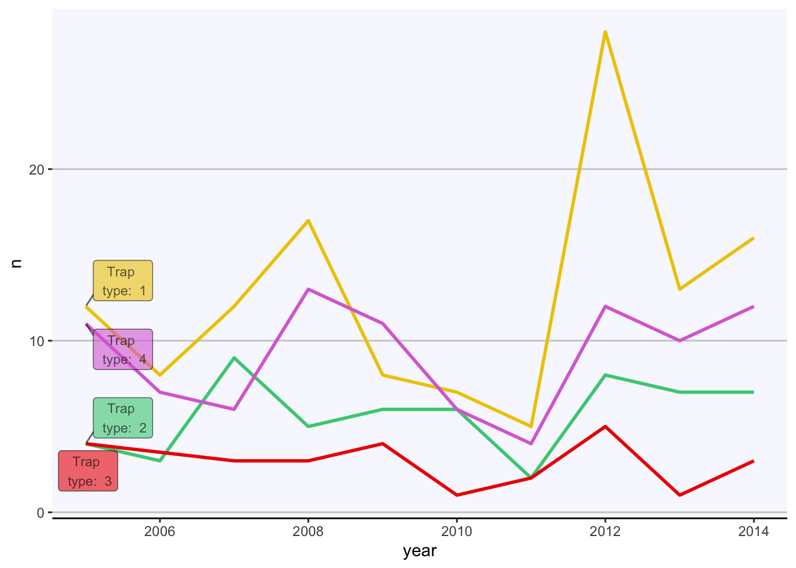

Beyond basic visualization
Pablo Gomez
2023-07-05
Cambiar a español  | Mudar para Português
| Mudar para Português 
1 Objectives:
- Cover some basics of interactive visualization
- Maybe something about gifs and animations?
2 Interactive figures
Having static figures is the most common application of graphics in
R, but R is also capable of making interactive figures that can be used
in dashboards and other platforms (i.e. shiny, or quarto). There are
several libraries that allow you to create interactive figures, one of
the most popular ones is called plotly. The best part of
plotly is that if you learn how to use ggplot, you can transfer your
figures to interactive plotly figures pretty much seamlessly. Lets try
that.
We use the function ggplotly() from the
plotly library to do that:
library(plotly) # load the plotly library
# Use the ggplotly function in one of the figures we previously created:
ggplotly(figures$bars)tCaptures <- captures %>%
mutate(date = as.Date(date, "%d/%m/%y"), # First we will format the date
year = lubridate::floor_date(date, 'year')) %>% # The we create a variable formatting the date as month of the year
count(year, trap_type) # Count the number of observations by monthNow that we have our variables in the correct format, we can use it as any other variable.
library(ggrepel)
lab <- tCaptures %>%
group_by(trap_type) %>%
filter(year == min(year))
figures$timeseries <- tCaptures %>%
ggplot() +
geom_line(aes(x = year, y = n, col = factor(trap_type)), lwd = 1) +
geom_label_repel(data = lab, aes(x = year, y = n, label = paste('Trap \n type: ', trap_type), fill = factor(trap_type)), alpha = 0.6, size = 3) +
theme(
axis.line.y = element_blank(),
panel.background = element_rect(fill = 'ghostwhite'),
axis.line.x = element_line(),
panel.grid = element_blank(),
panel.grid.major.y = element_line(colour = 'grey80'),
legend.position = 'none'
) +
scale_fill_manual(values = c('gold2', 'seagreen3', 'red2', 'orchid')) +
scale_color_manual(values = c('gold2', 'seagreen3', 'red2', 'orchid'))
figures$timeseries
# captures %>%
# count(municipality, trap_type) %>%
# plot_ly(., x = ~municipality, y = ~n, type = 'bar') %>%
# ggplot() +
# geom_bar(aes(
# y = municipality, # X axis
# x = n, # Y axis
# fill = factor(trap_type) # Variable used for fill
# ), stat = 'identity') # type of bar plot
#
# Animals <- c("giraffes", "orangutans", "monkeys")
# SF_Zoo <- c(20, 14, 23)
# LA_Zoo <- c(12, 18, 29)
# data <- data.frame(Animals, SF_Zoo, LA_Zoo)
#
# fig <- plot_ly(captures, x = ~municipality, y = ~SF_Zoo, type = 'bar', name = 'SF Zoo')
# fig <- fig %>% add_trace(y = ~LA_Zoo, name = 'LA Zoo')
# fig <- fig %>% layout(yaxis = list(title = 'Count'), barmode = 'stack')
#
# fig